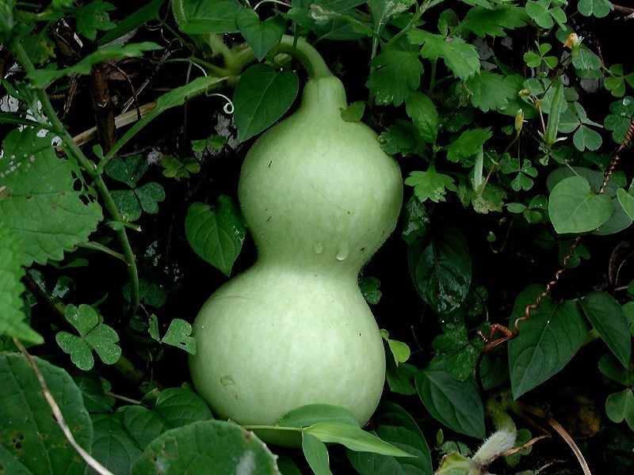

लौकीBottle Gourd
Lagenaria siceraria · Cucurbitaceae · FLR-0096

- Scientific name
- Lagenaria siceraria (Molina) Standl.
- Family
- Cucurbitaceae
- Hindi
- लौकी
- Status here
- cultivated
- IUCN
- not evaluated
When to look कब देखें
Expected mainly in June, July, August, September, October, November.
लौकी / Bottle Gourd
Lagenaria siceraria (Molina) Standl. — Cucurbitaceae
लौकी (घिया / कद्दू / बोतल लौकी / कैलाबश) — पूर्वी उत्तर प्रदेश के ग्रामीण घरों की छतों, मचानों (bamboo trellises) और खेतों में व्यापक रूप से उगाई जाने वाली एक बहुत पुरानी, तेजी से बढ़ने वाली वार्षिक शाकीय बेल (climbing annual vine) है। इसकी उत्पत्ति संभवतः अफ्रीका में हुई थी, लेकिन इसकी प्राचीन काल से ही पूरे एशिया में खेती की जा रही है। इसकी सबसे बड़ी पहचान इसके बड़े, मखमली गुर्दे के आकार के पत्ते, रात में खिलने वाले सफेद रंग के बड़े फूल (nocturnal white flowers), और हल्के हरे रंग के लंबे या घड़े के आकार के बड़े चिकने फल हैं। पूर्वी उत्तर प्रदेश में लौकी का उपयोग विभिन्न प्रकार की सब्जियां, रायता, दाल (लौकी वाली दाल), और मिठाई (लौकी का हलवा) बनाने के लिए किया जाता है। पकने पर इसके कड़े और सूखे खोल का उपयोग गांवों में पानी भरने के बर्तन और पारंपरिक वाद्य यंत्रों (जैसे सपेरों की बीन) को बनाने के लिए किया जाता है। लाल कद्दू बीटल (Red Pumpkin Beetle, INS-0029) इसका एक मुख्य कीट है।
Quick Identification त्वरित पहचान
| Feature | Description |
|---|---|
| Plant habit | Rapidly climbing or trailing annual herbaceous vine up to 3–10 meters, climbing via branched coiled tendrils |
| Leaves | Alternately arranged, broad, kidney-shaped or heart-shaped (15–30 cm wide), soft-velvety to the touch |
| Flowers | Large (8–10 cm), white, solitary, opening at dusk (nocturnal), with hairy petals and a sweet scent |
| Fruit | A massive, fleshy pepo (30–100 cm long); green-yellow, cylindrical or bottle-shaped, becoming woody when dry |
| Seeds | Numerous, flat, rectangular-oval (10–15 mm long), cream-white, embedded in spongy white pulp |
Field tip: Look at village thatch roofs or bamboo trellises during September. Look for thick green vines with huge soft leaves and coiled spring-like tendrils. Search for large white flowers that open in the evening. The long, pale green bottle-shaped gourds hang down from the trellis support.
Morphology आकारिकी
Biometrics (typical measurements of mature plants in the northern Indian plains):
| Measurement | Range |
|---|---|
| Vine length | 3.0–10.0 m |
| Leaf width | 15–30 cm |
| Flower diameter | 8.0–10.0 cm |
| Fruit length | 30.0–100.0 cm |
| Fruit weight | 1.0–3.0 kg |
| Seed length | 10–15 mm |
Stem and Tendrils: Stems are prostrate or climbing, angular, covered in soft, white, spreading hairs. Tendrils are branched, coiled, wrapping around supports tightly.
Foliage: Simple, alternate, shallowly 3–7 lobed leaves, exuding a musky smell when crushed.
Flowers: Unisexual (male and female on the same plant). The male flower has a long stalk, and the female flower has a short stalk with a tiny bottle-shaped ovary at its base.
Fruit and Seeds: The outer rind is smooth and waxy when young, drying into a hard, durable, woody waterproof shell.
Cultivation Calendar कृषि कैलेंडर
- Monsoon crop (Kharif): Seeds are sown in June–July directly in pits. The vines climb over bamboo trellises (machan) to prevent fruits from rotting on wet soil. Harvesting occurs from August to November.
- Summer crop: Seeds are sown in January–February. The vines crawl on dry sandy river beds or borders. Harvesting occurs from April to June.
- Germination: Seeds require warm temperatures (25–35°C) to germinate within 5–8 days.
Associated Species / Interactions संबंधित प्रजातियाँ
- Key Pest Interaction: The Red Pumpkin Beetle (Aulacophora foveicollis) feeds heavily on the cotyledons and leaves of young seedlings, causing severe defoliation.
- Nocturnal Pollinators: Flowers open in the evening and are pollinated by large nocturnal hawk moths and beetles attracted to the white petals and sweet scent.
Pests and Diseases कीट और रोग
- Red Pumpkin Beetle: Aulacophora foveicollis (Red Pumpkin Beetle, INS-0029) damages young leaves.
- Fruit Fly: Bactrocera cucurbitae punctures the young gourds to lay eggs inside; larvae feed on the pulp, causing fruits to rot and drop.
- Powdery Mildew: Fungal disease causing white, flour-like patches on leaves during humid autumn weeks.
Traditional and Ethnobotanical Use पारंपरिक और नृवंशवनस्पति उपयोग
- Been Instrument Chamber: The mature round gourd is dried until the inner pulp decays. The empty, hard waterproof shell is hollowed out and attached to two bamboo pipes to form the resonating chamber of the Been (the snake charmer's wind instrument).
- Kaddu ka Bartan (Calabash Vessel): The dried, hollowed woody shells are used by ascetics (sadhus) and villagers as natural water flasks (kamandalu) or seed storage vessels.
- Traditional Lauki Halwa: Sliced fresh gourd is grated, squeezed to remove excess water, boiled in milk with sugar, ghee, and cardamom to make Lauki ka Halwa, a staple festive dessert.
- Acidity and Fever Juice: Fresh gourd juice is squeezed and drunk in traditional medicine to cool the stomach and reduce burning sensations in the urinary tract.
Expected Locally स्थानीय रूप से अपेक्षित
Not a field record. Written from published accounts for eastern Uttar Pradesh. No confirmed local sighting yet — if you have seen it, that is what the atlas needs.
अभी तक स्थानीय पुष्टि नहीं। यह विवरण प्रकाशित स्रोतों से है, किसी अवलोकन से नहीं।
An essential home garden crop grown by almost every rural family in the Basti district, regularly observed in the Harraiya, Vikramjot, and Basti blocks. Farmers construct raised bamboo frames (machan) in their backyards. They state that hanging fruits grow straighter and have a more uniform green color than those allowed to lie flat on the ground.
Distribution वितरण
Global range: Widespread across tropical Africa (probable origin) and Asia; cultivated globally in all tropical and subtropical zones.
In India: Cultivated universally in all plains and riverine farming systems.
In Uttar Pradesh: Abundant state-wide, both in home gardens and commercial vegetable zones.
In Basti district / eastern UP: Widespread across all agricultural blocks.
Research Questions शोध प्रश्न
Anyone can investigate these | कोई भी इन प्रश्नों की जाँच कर सकता है
- How many centimeters does a Bottle Gourd vine grow in a single 24-hour period during August? — Measure and record daily stem growth.
- Do Red Pumpkin Beetles prefer feeding on young leaves compared to old mature leaves? — Record beetle density on different leaf types.
- What is the number of female flowers produced on a vine pruned after 15 leaves compared to an unpruned vine? — Conduct pruning trials.
- How many minutes does a nocturnal hawk moth spend feeding on a white Bottle Gourd flower? — Monitor night-time visits.
- Does the hard shell of a dry Bottle Gourd become completely waterproof when rubbed with mustard oil in Basti? / क्या बस्ती में सरसों का तेल लगाने से सूखी लौकी का कड़ा खोल पूरी तरह से वाटरप्रूफ (Waterproof) हो जाता है? — Test water permeability.
Similar Species मिलती-जुलती प्रजातियाँ
| Species | How to tell apart | comparison |
|---|---|---|
| Bitter Gourd (Momordica charantia) | Vine has smaller, deeply lobed leaves; flowers are yellow; fruit is warty, green, and bitter | करेला — पीले फूल, छोटे कांटेदार कड़वे फल |
| Sponge Gourd (Luffa aegyptiaca) | Leaves are dark green, rough; flowers are yellow; fruit has dark green lines, drying into a fibrous sponge | नेनुआ / तोरई — पीले फूल, रेशेदार सूखे फल |
| Pumpkin (Cucurbita maxima) | Vine is massive, prostrate; flowers are yellow-orange; fruit is huge, yellow-orange, ribbed | कद्दू / कोहड़ा — पीले-नारंगी फूल, विशाल गोल पीले फल |
Field rule: Climbing annual vine with broad velvety kidney-shaped leaves, large nocturnal white flowers, and elongated or bottle-shaped pale green edible fruits that dry into hard woody shells, is the Bottle Gourd (Lauki).
Taxonomy & Classification वर्गीकरण
Original description. Juan Ignacio Molina described this species as Cucurbita siceraria in 1782 in his Saggio sulla Storia Naturale del Chili (p. 133). Paul Carpenter Standley placed it in the genus Lagenaria in 1930. The genus name Lagenaria is derived from the Latin lagena, meaning bottle. The specific name siceraria is derived from the Latin sice, meaning drinking cup.
Subspecies. Monotypic — no subspecies are currently recognised in the main index.
Family and order placement. Placed in the order Cucurbitales, family Cucurbitaceae (gourd or cucumber family), subfamily Cucurbitoideae, tribe Beniseae.
Phylogenetic notes. Lagenaria siceraria is one of the oldest cultivated plants in human history, with genetic studies suggesting it was carried by early humans across the Bering Strait from Asia to the Americas over 10,000 years ago.
IUCN status rationale. Not evaluated (NE) by the IUCN Red List. It has a secure, expanding global agricultural population.
Photo Gallery फोटो गैलरी
References संदर्भ
- Standley, P. C. (1930). Lagenaria siceraria. Field Museum of Natural History, Botanical Series, Chicago, Vol. 3, p. 435. [original generic transfer]
- Molina, J. I. (1782). Saggio sulla Storia Naturale del Chili. Bologna, p. 133. [original description as Cucurbita siceraria]
- Brandis, D. (1906). Indian Trees. Archibald Constable & Co., London.
- Erickson, D. L., Smith, B. D., Clarke, A. C., Sandweiss, D. H. & Tuross, N. (2005). An Asian Origin for a 10,000-year-old Domesticated Plant in the Americas. Proceedings of the National Academy of Sciences (covers Bottle Gourd migration).
- World Flora Online (2024). Lagenaria siceraria details.
- GBIF Occurrence Data — Lagenaria siceraria, India (2010–2025).
Source file: species/flora/crops/bottle_gourd.md